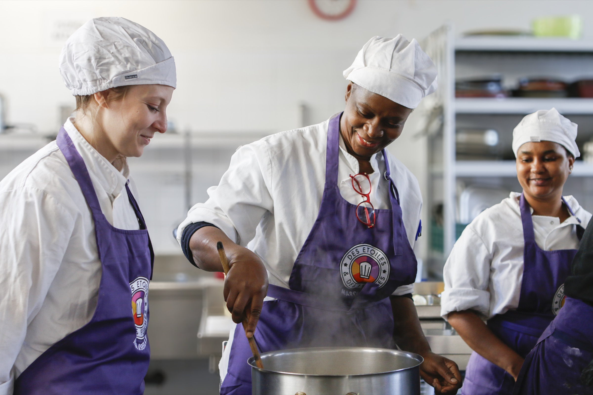

Vous accompagnez une personne vers l'emploi
Un métier, un diplôme, un contrat.
Pour les conseillères et conseillers France Travail, les missions locales, les travailleurs sociaux : des parcours gratuits, avec des stages chez des chefs et un suivi jusqu'au premier contrat.
- Se former
- CAP cuisine ou titre de commis de cuisine, avec Des Étoiles et des Femmes (13 antennes) et Tournesol.
- Travailler
- Un emploi en insertion aux Beaux Mets ou à La Table de Cana.
- Être suivi
- Logement, papiers, garde d'enfants, recherche de poste : un suivi individuel.
83 % de sorties en emploi ou en formation en 2025, tous dispositifs.
Orienter une personne →.jpg)